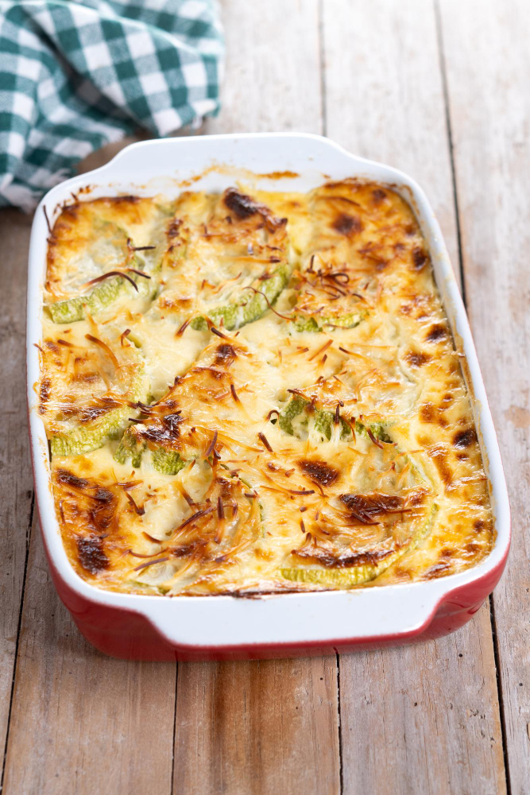

Tuna Bake

Description
Recipe for Gluten Free Tuna Bake
Quick and simple midweek meal. Great accompanied with a salad or a slice or two of garlic bread.
Ingredients
- 300g Gluten Free Pasta
- Tin of Tuna (Brined or Spring Water)
- 200g of Sweetcorn
- Half Teaspoon of Salt
- Litter of Milk
- Lactose Free Milk if Preferred
- 250g of Preferred Cheese
- Lactose Free Cheese if Preferred
- 50g of Butter
- 50g of Cornflour
Steps
- Cook Pasta as Per Packet Instructions and Drain
- Add milk and butter to stove
- Slowly bring to simmer
- Dilute Cornflour in 50ml of Cold Milk
- Slowly Add diluted Cornflour to heated milk and slowly stir threw
- Bring to simmer and ensure milk thickened
- Turn off heat and add cheese to milk
- Stir Cheese threw
- Mix Sweetcorn, Pasta and Tuna with a Quarter of the Cheese Sauce
- Layer at Bottom of Pan
- Layer Remaining Cheese Sauce on Top
- Cook in middle of Oven for 45m at Gas Mark 6